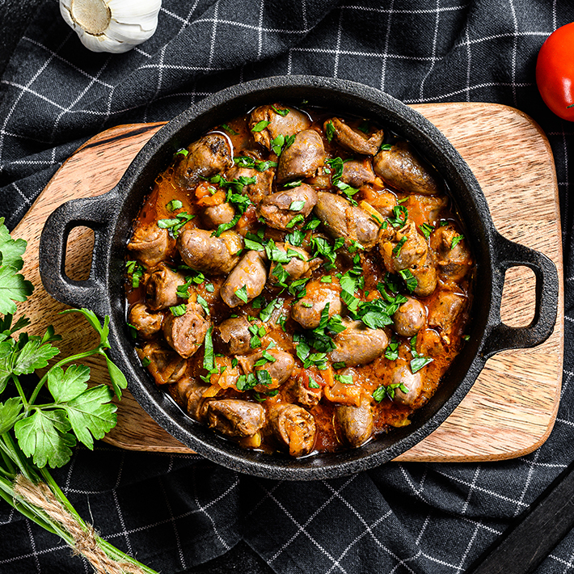

¿Un campero de corazones?
Gastronomía ceutí
El nacimiento del exquisito bocadillo de corazones de pollo típico ceuti y de gran aceptación en el mundo campero fue casi un accidente. Según cuenta la leyenda, todo empezó como una broma. Dicen que el propietario de un antiguo bar de tapas, La Farola, hoy ya desaparecido, quiso gastar una inocentada a su clientes más fieles y les preparó un nuevo y malintencionado montadito. Pero el tiro le salió por la culata. Los parroquianos encontraron deliciosa aquella extraña tapa aliñada con una mezcla de especias y quisieron conocer la receta: corazones de pollo.
El mismo reparo que aún hoy sufren los foráneos al toparse con este bocadillo debieron sentir aquellos ceutíes que hace cuarenta años probaron este popular plato por primera vez. Aún así, y pese al estupor de estar masticando el corazón de un ave, los parroquianos admitieron que aquello estaba realmente sabroso. Había nacido una receta, que, aunque no sea precisamente alta cocina, ha logrado en muy poco tiempo convertirse en una referencia gastronómica caballa de primer orden y casi un souvenir para quienes conocen por primera vez la ciudad.
La receta es sencilla. Una vez abiertos por la mitad, como libritos, las viscerillas son aliñadas con una mezcla de especies. Cada maestrillo tiene su librillo, pero Manuel Pérez accede a contar la suya. Ahí va: «cominos, una especie que traemos de Marruecos parecida al ras el hanut, perejil, sal, un pimiento rojo picante, sal y, si se van a comer en el día, un poquito de cebolla picada», dice. Las piezas se pasan por la plancha... y al plato.
Si el Brillante madrileño tiene su 'bocata-calamares', los 85.000 vecinos de Ceuta se pirran por los corazones de pollastre. Ya ven, para gustos están los colores... Karlos Arguiñano, en un guiño a sus seguidores del Sur, incluye una receta de corazones de pollo en su 'A mi manera. Las recetas fundamentales de la cocina regional española'. Y eso es darles carta de naturaleza.